<big-button on-click="createWorkspace('tosca-definitions-common')">
    
    <span slot="title">Open last workspace: <span id="workspace-name"></span></span>
    <span id="workspace-path" slot="text"></span>
</big-button>
<hr/>